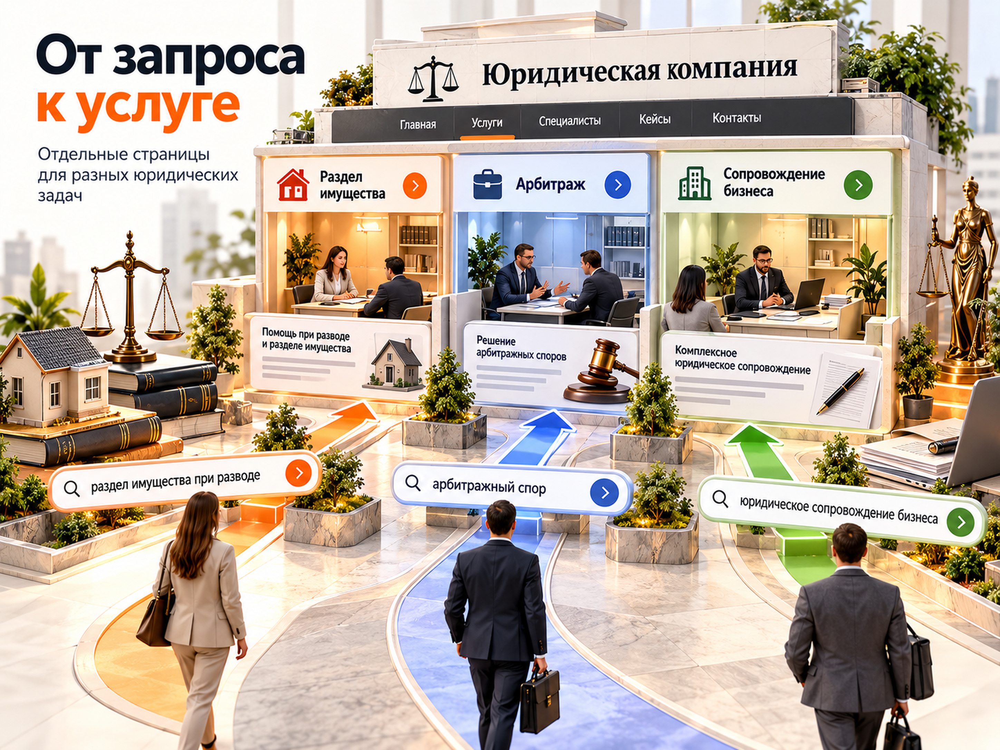
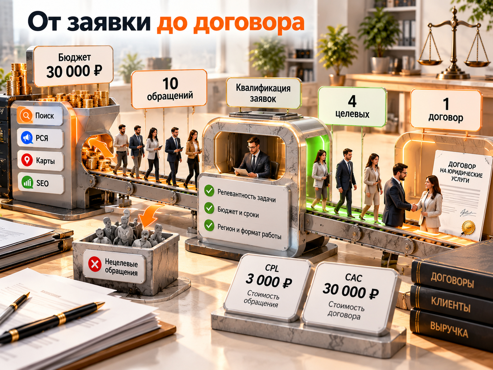

Продвижение юридических услуг: как привлекать клиентов в 2026 году
Продвижение юридических услуг лучше строить вокруг задачи клиента: раздела имущества, взыскания долга, арбитражного спора, обязательной публикации или юридического сопровождения бизнеса. Для уже сформированного спроса подходят SEO и поисковая реклама. Если человек ещё не знает о доступном юридическом решении, могут помочь экспертные материалы, РСЯ и другие способы привлечения внимания. Для фирмы с офисом отдельную роль играют Яндекс Карты и отзывы.
Главный принцип: конкретная проблема клиента, отдельная релевантная страница, понятное предложение и аналитика до заключённого договора. Важно измерять не только количество обращений, но и долю целевых лидов, стоимость договора и экономику соответствующей услуги.
С чего начать продвижение юридической компании
Юридический рынок неоднороден. Реклама семейного юриста, адвоката по уголовным делам и подрядчика по обязательной публикации сведений решает разные задачи. У них различаются аудитория, срочность обращения, язык запросов, длительность сделки и ценность клиента. Универсальная кампания с обещанием «решаем любые юридические вопросы» теряет эту специфику.
До выбора канала разделите практику на направления. Для каждого ответьте на четыре вопроса:
- Кто обращается? Физическое лицо, собственник компании, бухгалтер, кадровик, корпоративный юрист или директор.
- Что стало причиной поиска? Конфликт, судебное уведомление, обязательный срок, сделка или необходимость постоянного сопровождения.
- Как формулируют запрос? По названию услуги («юрист по наследству») либо по проблеме («контрагент не платит по договору»).
- Как выглядит бизнес-результат? Разовая консультация, подготовленный документ, судебное сопровождение, подписанный договор на обслуживание.
Например, по банкротству физического лица часто нужна консультация и оценка условий; по Федресурсу ищут конкретное действие с понятным сроком; для сложной корпоративной процедуры сперва требуется объяснить саму возможность решения. По этим сценариям нельзя назначать один рекламный бюджет или один норматив стоимости заявки.
Какие каналы привлечения клиентов работают
Начинайте с того, насколько сформирован спрос, а не с популярности рекламной площадки.
| Канал | Когда выбирать | Что измерять и учитывать |
|---|---|---|
| SEO | Есть регулярный спрос на конкретные услуги и вопросы клиентов | Органические переходы на нужные страницы, целевые обращения, договоры; результат накапливается постепенно |
| Поиск Яндекс Директа | Клиент уже ищет юриста или определённое действие | Целевые запросы, звонки, стоимость квалифицированных лидов; трафик можно получать после запуска |
| РСЯ и другие охватные форматы | Прямых запросов мало, проблему или решение нужно сначала объяснить | Качество аудитории и лидов; широкий охват сам по себе не равен спросу |
| Яндекс Карты | Фирма имеет офис, клиенты выбирают специалиста рядом с домом или работой | Просмотры карточки, звонки, построения маршрутов, отзывы |
| Экспертный контент | Клиент изучает риски, документы и способы решения до контакта | Релевантные просмотры, переходы к услуге, обращения из материалов |
| Ретаргетинг | Решение занимает время, пользователь уже ознакомился с предложением | Возвраты, целевые действия, частоту показов и инкрементальный эффект |
Практическое правило: если человек прямо сейчас ищет услугу, сначала проверьте Поиск и посадочную страницу. Если он не знает о специальной процедуре, прямых запросов может не хватить: тогда тестируйте объясняющий контент или рекламу в сетях. Если выбор сильно привязан к местоположению, поддерживайте карточку компании в Картах. Каналы дополняют друг друга, но не обязаны присутствовать одновременно.
SEO-продвижение юридических услуг
SEO юридической фирмы начинается со структуры сайта. Нужна не сотня страниц с переставленными словами, а отдельные полезные страницы под действительно разные услуги и намерения пользователя.
Структура сайта и страницы услуг
На сайте многопрофильной компании могут быть самостоятельные разделы для раздела имущества, арбитражных споров, юридического сопровождения бизнеса, наследственных дел и иных реально оказываемых услуг. Каждая страница должна отвечать на самостоятельную задачу и вести к подходящему специалисту.

Для примера пользователь с запросом «раздел имущества при разводе» должен попадать на страницу о разделе имущества: с обстоятельствами, влияющими на работу, документами, этапами, специалистами и способом обращения. Ему не нужна общая витрина «все юридические услуги» с десятками направлений.
Схему разделения дополняют общие разделы о компании, команде, контактах, условиях работы и экспертных публикациях. Не создавайте региональные или почти одинаковые страницы только ради повторения ключевой фразы: самостоятельная страница оправдана, если есть отдельная услуга, предложение и ценная для посетителя информация.
Экспертные статьи и информационный спрос
Часть будущих клиентов начинает не с поиска исполнителя, а с вопроса: «что делать после получения претензии», «как взыскать задолженность с контрагента», «какие документы нужны для банкротства». Хороший материал сначала объясняет порядок действий и ограничения, а затем показывает, в каких обстоятельствах нужна юридическая помощь.
Для каждой статьи полезны конкретные ситуации, понятные ответы, условия применимости, сведения о квалификации автора и дата актуализации. В юридической сфере факты и процедуры должны проверяться профильным специалистом: маркетолог может организовать подачу, но не должен имитировать юридическую экспертизу.
Связывайте материал с релевантной услугой, а не с произвольной формой заявки. Например, статья о взыскании долга должна вести на страницу сопровождения взыскания, а не на главную с общим перечнем практик.
Доверие, специалисты и кейсы
На юридическом сайте нужно подтверждать, кто и какую задачу решает. Полезны специализация и статус специалистов, порядок взаимодействия, понятные условия оплаты, реальные отзывы и обезличенные разборы дел, публикации и реквизиты компании. Не стоит обещать гарантированный исход судебного спора или использовать не подтверждённые факты об опыте.
Кейс особенно полезен, когда читатель узнаёт свою ситуацию. Но результаты разных дел нельзя свести к универсальному обещанию: итог зависит от обстоятельств и документов. По этой же причине на странице арбитража лучше показывать относящиеся к нему примеры, а не случайные достижения по другим направлениям.
Яндекс Директ для юридических услуг
Яндекс Директ помогает получить обращение в момент, когда человек уже сформулировал потребность в услуге. Однако рекламная структура должна соответствовать направлениям права, географии, экономике сделки и доступному объёму конверсий. Не стоит объединять семейные споры, банкротство и корпоративный консалтинг в одно предложение. При этом чрезмерное дробление небольшого рекламного бюджета мешает собрать статистику.
Когда эффективнее Поиск
Поисковая реклама обычно наиболее понятна для запросов с выраженным намерением: «адвокат по арбитражному спору», «юрист по разделу имущества», «опубликовать сведения на Федресурсе». Пользователь сам ищет услугу, поэтому ему важно сразу показать соответствующую страницу, условия работы и следующий шаг.
Проверьте коммерческие и проблемные запросы отдельно. Запрос «как составить иск самостоятельно» и запрос «юрист составить иск цена» не равнозначны по готовности обратиться. В отчёте по поисковым фразам отслеживайте нерелевантные направления, учебные запросы, неподходящие регионы и услуги, которые фирма не оказывает. Для крупных специализаций можно вести отдельную аналитику по качеству лидов и расходу.
Уточните соответствие модерации: по действующим правилам Яндекса на сайте юридических услуг должны быть корректно указаны наименование организации или ФИО предпринимателя, фактический адрес, телефон, ОГРН/ОГРНИП и ИНН. Посадочная страница должна соответствовать объявлению. Не используйте в рекламе недостоверные обещания и неподтверждённые превосходные степени.
Когда нужны РСЯ и другие форматы
РСЯ стоит проверять там, где потенциальный клиент не ищет услугу по точному названию, но может заинтересоваться решением своей проблемы. Это особенно характерно для редких корпоративных процедур. В этом случае рекламное сообщение должно объяснять ценность услуги и направлять на страницу, где раскрыт механизм работы.
РСЯ не становится обязательным каналом для каждой юридической фирмы. Более того, в некоторых нишах обязательных публикаций охватная реклама почти не даёт целевых обращений, потому что клиенту нужно выполнять процедуру в конкретный момент, а не после просмотра баннера. Решение о продолжении теста принимайте по качеству лидов, а не количеству показов.
Автоматические стратегии выбирайте по фактическому объёму и качеству конверсий. При малом числе целевых действий оплата за конверсии не является универсальным решением: кампания может недополучать трафик. Подробности настройки вынесены в отдельные материалы: Яндекс Директ для юридических услуг и Контекстная реклама для юридической компании.
Реальные результаты юридических проектов
Кейс 1. Юридический консалтинг и обязательные публикации. В моём проекте продвигались Федресурс, Вестник государственной регистрации, регистрация в Роскомнадзоре, ФРМО и другие специализированные направления. За один опубликованный период длительностью 13 месяцев расход составил 18 729 878 ₽, получено 113 721 конверсий, средняя стоимость цели 164,70 ₽. Целью была отправка формы; она не означает автоматически квалифицированный лид или договор. Более 95% заявок приходило с Поиска. Дешёвые массовые направления и сложные услуги с дорогими заявками нельзя оценивать одной средней цифрой. Полный кейс юридического консалтинга.
Кейс 2. Выкуп акций с высоким чеком. При малом количестве прямых поисковых запросов основной объём обращений удалось получать через РСЯ и автоматические кампании. В опубликованном кейсе недельный расход был около 293 000 ₽; стоимость лида по фиксируемым целям составляла 4000‑4200 ₽, а с учётом дополнительных обращений через формы и мессенджеры оценивалась примерно в 2500 ₽. Это показатель конкретного проекта, не рыночный ориентир для любой юридической услуги. Полный кейс выкупа акций.
Эти два проекта показывают принципиальную разницу между сформированным обязательным спросом и редким скрытым спросом. Переносить стоимость обращения из одного проекта на другой без учёта специализации, региона, чека, посадочной страницы и способа фиксации заявок нельзя.
Сколько стоит продвижение юридических услуг
Универсальной цены заявки или договора для всей юридической сферы не существует. Даже внутри одной фирмы сопровождение арбитражного процесса, консультация по семейному спору и обязательная регистрационная услуга могут иметь разную стоимость привлечения и разную прибыльность.
Как рассчитать рекламный бюджет
Сначала определите, сколько договоров требуется бизнесу, а затем оцените воронку от обращений до продаж.
Формула: бюджет = плановое число договоров ÷ конверсия обращений в договор × прогнозная стоимость обращения.
Например, если планируется 5 договоров, из обращений в договор превращается 20%, а прогнозный CPL составляет 3000 ₽, потребуется 25 обращений и расчётный рекламный бюджет 75 000 ₽. Это модель при указанных допущениях, а не прогноз для всей отрасли; фактические результаты могут отличаться. Расходы на создание сайта, работу специалистов и ведение рекламы в данном примере не включены.
Проверяйте спрос в конкретном регионе и по конкретной услуге. Если запросов мало, даже большой бюджет не обеспечит запланированный поток. Если услуга сложная и сделка длительная, проверка гипотезы должна включать время на квалификацию заявок.
Как определить допустимую стоимость клиента
Для оценки окупаемости полезнее заранее рассчитать допустимый CAC, а не искать самую дешёвую заявку.
Допустимый CAC зависит от маржинального дохода, который приносит договор, затрат на исполнение услуги, срока получения денег и приемлемой для компании доли расходов на привлечение. Для разового проекта и регулярного юридического сопровождения расчёт будет отличаться.
Формула: допустимый CPL = допустимый CAC × конверсия обращения в договор.
Если компания готова потратить на заключённый договор не более 24 000 ₽, а из обращений в договор переходит 20%, допустимая стоимость обращения составит 4800 ₽. Это лишь пример. Качество лида, прибыльность разных практик и влияние повторных продаж следует считать отдельно.
Для углублённого разбора показателей см. Стоимость привлечения клиента (CAC) и Как оценить эффективность Яндекс Директа.
Какая посадочная страница приводит целевых клиентов
Хорошая посадочная страница отвечает на тот же вопрос, что и рекламный запрос. Пользователь, который ищет юриста для арбитражного спора, должен увидеть помощь по арбитражу, а не длинный каталог всех специализаций компании.
На странице должны быть видны:
- Суть услуги: какие задачи решаются и когда она подходит.
- Исполнитель: специализация юриста, его статус и относящийся к задаче опыт.
- Порядок работы: этапы, документы от клиента, формат консультации.
- Стоимость: цена, диапазон при наличии оснований или прозрачный принцип расчёта.
- Доказательства: релевантные примеры, отзывы, публикации без конфиденциальных данных.
- Контакт: понятный способ обратиться, позвонить или назначить консультацию, особенно с телефона.
Если нужна предварительная квалификация, форма может спрашивать тип проблемы, регион и удобный канал связи. Не перегружайте её вопросами, на которые человек не готов отвечать до разговора. Сохраните данные об источнике обращения в CRM, чтобы потом сравнивать не только конверсию сайта, но и реальные договоры.
Яндекс Карты, отзывы и локальное продвижение
Для юридической компании с офисом Яндекс Карты могут быть самостоятельным источником обращений. Пользователь часто сравнивает не только стоимость консультации, но и расположение офиса, фотографии, часы работы, доступность телефона и реальные отзывы.
Заполните карточку компании достоверными данными, укажите оказываемые услуги, добавьте понятные фотографии офиса и специалистов, следите за актуальностью контактов. На отзывы отвечайте предметно, не раскрывая детали дела. Просить отзыв у реального клиента можно после оказания услуги, но нельзя подменять реальные оценки вымышленными.
Сравнивайте показатели карточки с реальными обращениями. Построенный маршрут или просмотр телефона ещё не равен договору. Для фирмы, обслуживающей клиентов дистанционно по всей стране, приоритет карт может быть ниже, чем у местной адвокатской практики с личным приёмом.
Как оценивать заявки, договоры и окупаемость
Обращение - факт контакта с компанией. Целевой лид - человек, которому фирма в принципе может оказать нужную услугу. Договор - подтверждённая продажа. Смешивать эти этапы в одном показателе нельзя.
Рассмотрим условную воронку юридической компании за один расчётный период:
| Этап или показатель | Условное значение |
|---|---|
| Рекламный бюджет | 30 000 ₽ |
| Все обращения | 10 |
| Из них целевые обращения | 4 |
| Заключённые договоры | 1 |
| CPL: стоимость обращения | 30 000 / 10 = 3000 ₽ |
| Стоимость целевого обращения | 30 000 / 4 = 7500 ₽ |
| CAC: рекламная стоимость договора | 30 000 / 1 = 30 000 ₽ |

В этом условном примере из десяти обращений четыре подходят по профилю и одно завершается договором. CPL равен 3000 ₽, но рекламная стоимость заключённого договора составляет 30 000 ₽. Результат не позволяет автоматически объявить рекламу прибыльной: нужны выручка, расходы на исполнение и фактическая маржа. Если часть обращений фиксируется только вручную, сначала приведите источники данных к единой методике.
В практической аналитике обычно разделяют: показ и клик, обращение, квалификацию, консультацию, договор и оплаченный договор. Для длинных B2B-сделок полезна передача подтверждённых статусов из CRM в Яндекс Метрику. Метрика поддерживает офлайн-конверсии и интеграции с CRM; их привязка к визитам зависит от переданных идентификаторов и периода учёта. Если договор подписан спустя месяцы, не следует предполагать, что каждая поздняя продажа автоматически привяжется к первоначальному визиту.
Сравнивайте каналы по одной методике и отдельно смотрите качество заявок по направлениям права. Если одна кампания приносит много бесплатных консультаций, а другая меньше обращений, но больше оплаченных договоров, стоимость заполнения формы не показывает, какая из них выгоднее.
Пошаговый план продвижения юридической компании
- Разделите услуги и аудитории. Укажите приоритетные практики, географию и целевые типы клиентов.
- Изучите поисковый спрос. Отделите запросы на конкретную услугу от информационных вопросов и редких сложных задач.
- Подготовьте страницы. Создайте самостоятельные страницы приоритетных услуг с конкретикой, специалистами и контактами.
- Настройте учёт заявок. Зафиксируйте звонки, формы, обращения из мессенджеров и статусы в CRM. Определите, что считается целевым лидом.
- Запустите тест Поиска по сформированному спросу. Учитывайте регион, реальные поисковые запросы, качество лидов и экономику каждой практики.
- Подключайте другие каналы по задаче. Развивайте SEO, экспертный контент, карты; тестируйте РСЯ только там, где для неё есть обоснование.
- Оптимизируйте по договорам. Сравнивайте стоимость квалифицированного обращения и договора, а не только CTR, клики или общие заявки.
Основные ошибки и как их избежать
| Ошибка | Почему мешает | Что делать |
|---|---|---|
| Все направления ведут на одну страницу | Посетитель не находит нужную услугу | Разделить посадочные по самостоятельным задачам |
| Одна кампания на все юридические услуги | Нельзя увидеть экономику отдельных практик | Разделять крупные направления без избыточного дробления |
| Оптимизация только по дешёвым формам | Алгоритм может приводить нецелевые обращения | Считать качество лидов и договоры в CRM |
| РСЯ запускают только ради охвата | Показы без спроса не означают клиентов | Проверять гипотезу по целевым обращениям |
| На сайте нет специалистов и условий | Сложно оценить доверие и процесс работы | Добавить проверяемую конкретику и контактные данные |
| SEO создают ради количества страниц | Похожие страницы конкурируют и не решают задачу | Делать отдельные страницы только под разные интенты |
| Сравнивают CPL разных услуг без условий | Массовый лид-магнит и сложный B2B-договор несопоставимы | Указывать определение цели, период, регион и качество |
Продвижение юридических услуг работает лучше, когда каждая специализация получает подходящую связку из спроса, страницы, рекламы и аналитики. Для сформированного спроса начинать рационально с SEO и Поиска; для сложных услуг без прямых запросов может потребоваться объяснение решения и охват. Окончательный критерий качества продвижения - не число заполненных форм, а стоимость и прибыльность реальных договоров.
Автор: Максим Мирошников, специалист по платному трафику и Яндекс Директу. Кейсы и направления работы.